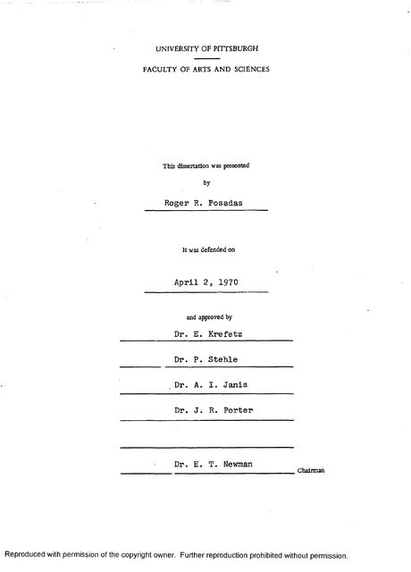
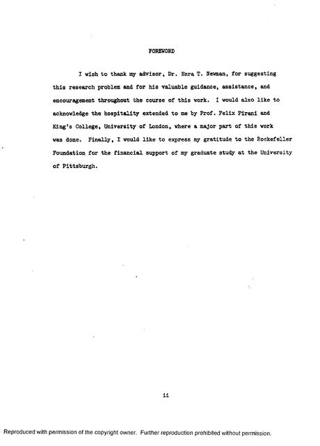
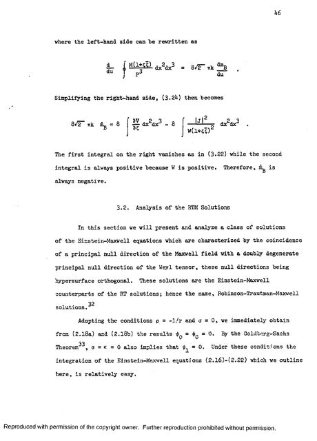
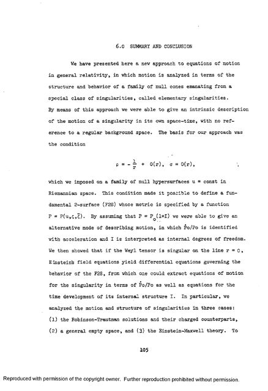

The Motion and Structure of Singularities in General Relativity
Roger R. Posadas · disertasyon sa Ph.D., University of Pittsburgh · ipinagtanggol noong Abril 2, 1970
Ang doctoral thesis ni Roger, isinulat sa edad na 25 sa ilalim ni Amerikanong pisiko sa University of Pittsburgh at tagapayo ni Roger sa Ph.D. Kasama siyang lumikha ng Newman–Penrose formalism, isang karaniwang kasangkapan sa general relativity, at natuklasan niya ang Kerr–Newman solution para sa black hole na may karga at umiikot. Alamin pa (magbubukas sa bagong tab). Hinarap nito ang isa sa pinakalumang tanong sa teorya ni Einstein tungkol sa grabidad: paano gumagalaw ang isang bagay?
Ang tanong
Sa pisika ni Newton, kailangan ng dalawang magkahiwalay na batas: ang isa ay tungkol sa kung paano lumilikha ng grabidad ang masa, ang isa naman ay tungkol sa kung paano gumagalaw ang mga bagay dahil dito. Iba ang Ang teorya ni Einstein tungkol sa grabidad (1915), kung saan binabaluktot ng masa at enerhiya ang spacetime at ang baluktot na iyon ang nagsasabi sa materya kung paano gumalaw. Alamin pa (magbubukas sa bagong tab) ni Einstein. Ang mga field equation nito, na naglalarawan kung paano binabaluktot ng materya ang spacetime, ang siya ring nagtatakda kung paano dapat gumalaw ang materyang iyon, kaya hindi na kailangan ng hiwalay na batas ng galaw. Ipinakita ito nina Einstein at Jakob Grommer para sa maliliit na test body noong 1927, at nilutas nina Noong 1938, ipinakita nina Albert Einstein, Leopold Infeld at Banesh Hoffmann na ang mga field equation ni Einstein lamang ang nagtatakda kung paano gumagalaw ang mabibigat na bagay. Alamin pa (magbubukas sa bagong tab) ang kaso ng mabibigat na bagay noong 1938.
Mahirap gawing aktuwal na mga equation of motion ang prinsipyong iyon. Ang karaniwang mga paraan noong dekada 1960 ay nag-iisip ng isang patag at walang lamang spacetime bilang background, na may grabidad bilang maliliit na alon sa ibabaw nito. Ang pinakamahusay na naunang pagtatangkang isama ang kargang elektrikal, nina Leopold Infeld at Philip Wallace noong 1940, ay kinailangang alisin ang bahagi ng teorya at gumawa ng basta-bastang pagpili kung aling field ang sa partikulo. Tinawag iyon ng thesis ni Roger na “unsatisfactory”, hindi kasiya-siya.
Ang paraan
Ibang paraan ang sinubukan nina Roger at Newman. Inilarawan nila ang isang partikulo bilang isang Sa general relativity, isang lugar kung saan nagiging walang hanggan ang mga dami gaya ng lakas ng gravitational field. Madalas itong gamitin ng mga pisiko upang ilarawan ang isang point particle. Alamin pa (magbubukas sa bagong tab), isang punto kung saan nagiging walang hanggan ang gravitational field, na naglalakbay sa isang linya sa spacetime. Mula sa bawat sandali sa linyang iyon, kumakalat palabas ang isang Ang lahat ng landas na maaaring tahakin ng isang kislap ng liwanag mula sa isang punto sa spacetime. Dahil walang mas mabilis sa liwanag, ito ang hangganan ng lahat ng maaaring maapektuhan ng pangyayaring iyon. Alamin pa (magbubukas sa bagong tab). Sa halip na sukatin ang partikulo laban sa isang patag na background, binasa nila ang galaw nito mula sa hugis ng pamilyang iyon ng mga light cone, gamit ang Isang kasangkapang matematikal para sa general relativity ni Einstein, ipinakilala nina Ezra Newman at Roger Penrose noong 1962. Pinadadali nito ang mga kalkulasyon tungkol sa mga black hole at gravitational wave. Alamin pa (magbubukas sa bagong tab), ang kasangkapang binuo ni Newman kasama si Britanikong mathematical physicist at katuwang ni Newman, na nagwagi ng 2020 Nobel Prize sa Pisika sa pagpapakitang hinuhulaan ng general relativity ang mga black hole. Alamin pa (magbubukas sa bagong tab) noong 1962. Sa salita ng thesis, nagbibigay ang paraan ng
an intrinsic description of the motion of a singularity in its own space-time, with no reference to a regular background space.
Ibig sabihin: isang paglalarawan ng galaw ng singularity sa sarili nitong spacetime, nang hindi tumutukoy sa anumang patag na background. Sinubok niya ito sa tatlong sitwasyon: ang Mga eksaktong solusyon sa mga equation ni Einstein, natuklasan nina Ivor Robinson at Andrzej Trautman noong mga 1960, na naglalarawan ng gravitational radiation na bumubuhos mula sa isang pinagmulan sa kahabaan ng lumalawak na mga light cone. Alamin pa (magbubukas sa bagong tab) at ang mga katapat nitong may kargang elektrikal; isang pangkalahatang espasyong walang materya; at ang buong Ang general relativity ni Einstein na pinagsama sa teorya ni Maxwell tungkol sa elektromagnetismo, kaya nag-iimpluwensiya sa isa't isa ang grabidad at ang mga field na elektrikal at magnetiko. Alamin pa (magbubukas sa bagong tab), kung saan nag-iimpluwensiya sa isa't isa ang grabidad at elektromagnetismo.
Ang kaniyang natuklasan
Dalawang resulta ang namukod. Una, lumabas na may panloob na estruktura ang singularity, na may sariling equation kung paano nagbabago ang estrukturang iyon sa paglipas ng panahon: sa larawang ito, hindi lubos na walang katangian ang isang point particle. Ikalawa, para sa isang partikulong may karga, nauuwi ang mga equation, sa pinakamababang antas, sa Ang equation of motion ng bumibilis na partikulong may karga na isinasama ang pag-urong dulot ng radyasyong inilalabas nito. Ibinigay ni Paul Dirac ang relativistikong anyo nito noong 1938. Alamin pa (magbubukas sa bagong tab), ang klasikong batas para sa kargang nawawalan ng enerhiya dahil naglalabas ito ng radyasyon habang bumibilis. Kusang lumitaw ang puwersa ng radiation reaction, na karaniwang kailangang idagdag nang mano-mano o iligtas sa pamamagitan ng Isang teknik para kontrolin ang mga walang hanggang halaga sa pisika. Para sa isang point charge, isinasama sa nasusukat na masa ang walang hanggang enerhiya ng sarili nitong field. Alamin pa (magbubukas sa bagong tab).
This derivation of the Lorentz-Dirac equation from the Einstein-Maxwell theory plus the discovery of an internal structure I for an elementary singularity constitute the major acheivements [sic] of our approach to equations of motion.
Ibig sabihin: ang pagkuha ng Lorentz–Dirac equation mula sa Einstein–Maxwell theory, kasama ang pagtuklas ng panloob na estruktura ng isang elementaryang singularity, ang pangunahing tagumpay ng kanilang paraan. Nagtapos siya sa pagbanggit ng mga natitira pang gawain: ang buong non-linear na epekto, mga partikulong umiikot, at mga sistemang may dalawa o higit pang singularity na nag-uugnayan.
Inilathala rin ang gawain bilang mga papel kasama si Newman: “Equations of motion and the structure of singularities” (magbubukas sa bagong tab) sa Physical Review Letters at “Motion and structure of singularities in general relativity” (magbubukas sa bagong tab) sa Physical Review, kapuwa noong 1969, at isang karugtong (magbubukas sa bagong tab) sa Journal of Mathematical Physics noong 1971.
Saan, at kasama sino
Dumating si Roger sa Pittsburgh noong 1965 bilang iskolar ng Rockefeller Foundation at dumiretso sa doktorado nang walang master's. Malaking bahagi ng thesis ang ginawa sa London, sa King's College, kung saan siya naging panauhin ni Britanikong pisiko (1928–2015) sa King's College London, isa sa mga nagtatag ng modernong teorya ng gravitational wave. Alamin pa (magbubukas sa bagong tab). Ito ang buong paunang salita, na isang talata lamang:
I wish to thank my advisor, Dr. Ezra T. Newman, for suggesting this research problem and for his valuable guidance, assistance, and encouragement throughout the course of this work. I would also like to acknowledge the hospitality extended to me by Prof. Felix Pirani and King's College, University of London, where a major part of this work was done. Finally, I would like to express my gratitude to the Rockefeller Foundation for the financial support of my graduate study at the University of Pittsburgh.
Ibig sabihin: nagpapasalamat siya kay Ezra T. Newman sa pagmumungkahi ng problema at sa paggabay, kay Felix Pirani at sa King's College ng University of London kung saan ginawa ang malaking bahagi nito, at sa Rockefeller Foundation sa pagtustos ng kaniyang pag-aaral. Ipinagtanggol niya ito noong Abril 2, 1970. Ang kaniyang komite ay si Ezra T. Newman bilang tagapangulo, kasama sina Propesor ng pisika sa University of Pittsburgh at isa sa mga guro ni Roger, kilala sa Newman–Janis method sa general relativity. Alamin pa (magbubukas sa bagong tab), P. Stehle, E. Krefetz at J. R. Porter. Sa pahina ng pamagat, Roger R. Posadas ang kaniyang pangalan, na may isang naunang digri: “B.S., University of the Philippines, 1964.”
| Kabanata | Pahina |
|---|---|
| 1. Panimula. Ang problema ng galaw, mula kay Einstein hanggang sa huling bahagi ng dekada 1960. | 1 |
| 2. Pangkalahatang pormalismo. Ang spin-coefficient formalism, mga spin-weighted spherical harmonic, isang espesyal na null coordinate system, at ang mga batayang palagay. | 9 |
| 3. Galaw ng malalayang singularity. Ang Robinson–Trautman solutions at ang mga katapat nitong may karga, ang Robinson–Trautman–Maxwell. | 37 |
| 4. Galaw sa isang pangkalahatang walang-lamang espasyo. | 59 |
| 5. Galaw sa Einstein–Maxwell theory. | 83 |
| 6. Buod at konklusyon. | 105 |
| Mga apendiks A hanggang C, at mga sanggunian. | 107 |
Mga pahina mula sa disertasyon

Ang pahina ng pamagat. 
Ipinagtanggol noong Abril 2, 1970, sa harap ng kaniyang komite. 
Ang paunang salita. 
Pahina 46, mula sa ikatlong kabanata. 
Pahina 105: ang buod.


Ito ang scan ng University Microfilms ng disertasyon (order no. 70-20,354), na ipinost ng kaniyang pamilya. Nasa Ingles ito. Makina ang kumilala sa teksto nito, kaya hindi maayos na mababasa ng screen reader ang mga equation at ilang salita.